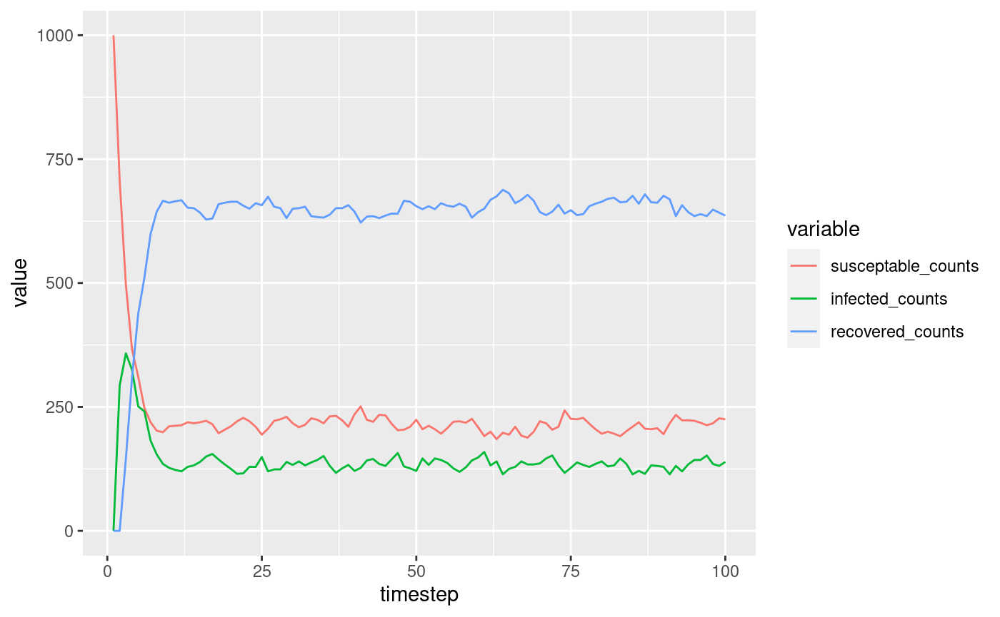
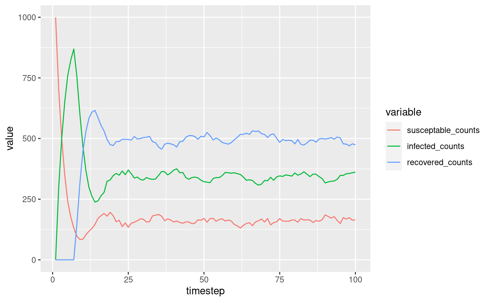

Scheduling.RmdThis tutorial continues on from the “Modelling” vignette.
Sometimes want to model things that don’t happen every timestep. Every change we’ve modelled so far happens at the end of the timestep. Here’s a simple SIR model taken from the last tutorial:
# Our model population <- 1000 S <- State$new('S', population) I <- State$new('I', 0) R <- State$new('R', 0) human <- Individual$new('human', list(S, I, R)) # Our processes random_transition_generator <- function(from, to, rate) { function(api) { from_state <- api$get_state(human, from) api$queue_state_update( human, to, from_state[runif(length(from_state)) < rate] ) } } render_state_sizes <- function(api) { api$render('susceptable_counts', length(api$get_state(human, S))) api$render('infected_counts', length(api$get_state(human, I))) api$render('recovered_counts', length(api$get_state(human, R))) } processes <- list( random_transition_generator(S, I, .3), random_transition_generator(I, R, .5), random_transition_generator(R, S, .1), render_state_sizes ) # run the simulation output <- simulate( human, processes, 100 ) plot_states <- function(output) { ggplot( melt(output, 'timestep'), aes(x = timestep, y = value, group = variable) ) + geom_line(aes(color = variable)) } # plot the output plot_states(output)

At the moment, we model recovery by randomly selecting half of the infected population every timestep.
But what if we want to wait 5 timesteps for a recovery?
Enter events. Processes can schedule events to for a future timestep. The API also allows you to monitor individuals who are already scheduled to avoid rescheduling them.
Here’s an example of how you could model recovery using scheduling.
recovery_event <- Event$new('recovery') recovery_event$add_listener(function(api, target) { api$queue_state_update(human, R, target) }) recovery_process <- function(api) { infected <- api$get_state(human, I) already_scheduled <- api$get_scheduled(recovery_event) infected <- setdiff(infected, already_scheduled) to_recover <- infected[runif(length(infected)) < .5] api$schedule(recovery_event, to_recover, 5) } processes <- list( random_transition_generator(S, I, .3), recovery_process, random_transition_generator(R, S, .1), render_state_sizes ) # add the event to the human individual human <- Individual$new('human', list(S, I, R), events = list(recovery_event)) # run the simulation output <- simulate( human, processes, 100 ) # plot the output plot_states(output)

We have made two changes to this model:
recovery_process. Instead of calling api$queue_state_change to perform a state change at the end of the timestep, it calls api$schedule to trigger an event in 5 steps time.recovery_event which we pass to the simulate function. You can add any number of listeners to this event to run when the event is triggered.Voilà! We have added an event based process to our model.